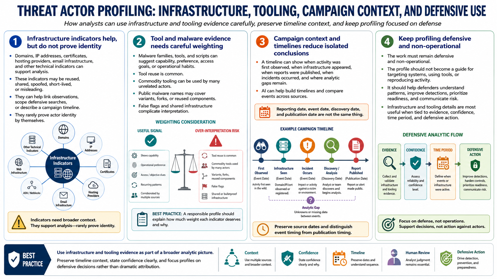

Infrastructure, Tools, Malware, and Campaign Context
Connecting to LMS... Progress: in progress

Narration
Infrastructure indicators can support analysis, but they should not be over-weighted without broader context. Domains, IP addresses, certificates, hosting providers, email infrastructure, and other technical indicators may be reused, shared, spoofed, short-lived, or misleading. They can help link observations, scope defensive searches, or describe a campaign timeline, but they rarely prove actor identity by themselves.
Malware families, tools, and scripts should also be treated carefully. At a high level, tool use can suggest capability, preference, access goals, or operational habits. But tool reuse is common. Commodity tooling can be used by many unrelated actors. Publicly described malware names can cover variants, forks, or reused components. False flags and shared infrastructure can further complicate interpretation. A responsible profile explains how much weight each indicator deserves.
Campaign context helps analysts avoid isolated conclusions. A timeline can show when activity was first observed, when infrastructure appeared, when reports were published, when incidents occurred, and where analytic gaps remain. AI can help build those timelines and compare events across sources. The timeline should preserve source dates because reporting date, event date, discovery date, and publication date are not the same thing.
This work must remain defensive and non-operational. The profile should not become a guide for targeting systems, using tools, or reproducing activity. It should help defenders understand patterns, improve detections, prioritize readiness, and communicate risk. Infrastructure and tooling details are most useful when they are tied to evidence, confidence, time period, and defensive action.